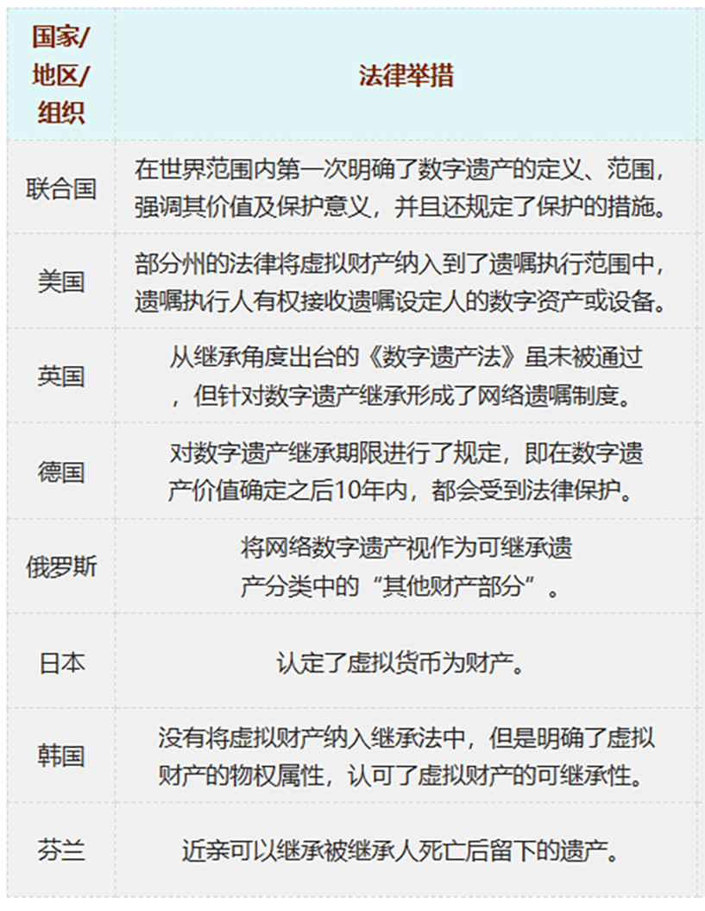
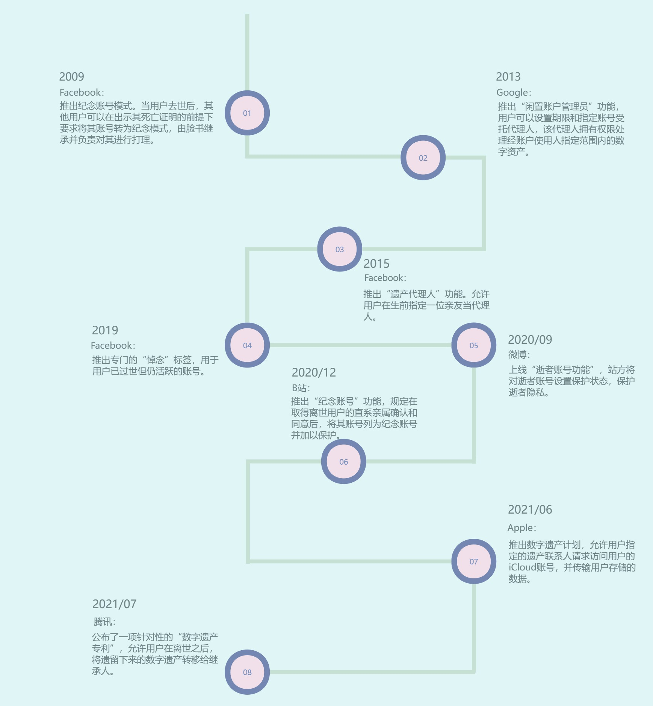

开篇
今年刚满20岁的大学生小张曾经认为死亡是离自己很远的事，但在去年自己的至亲被新冠病毒无情地夺走了生命，这促使小张对生命与死亡进行了深度的思考。
当亲人永远离开的时候，我才发现死亡原来离自己这么近，于是我开始思考当自己离开的那一天，还有什么愿望想要完成。
带着这样的想法，小张在年初选择了在中华遗嘱库订立遗嘱，直面死亡。然而在与中华遗嘱库工作人员的交流中，小张惊讶地发现，订立遗嘱的年轻人绝非个例，越来越多的年轻人开始关注生命、正视死亡。
直面死亡：开始立遗嘱的年轻人们
一直以来，“立遗嘱”总是被自然而然地和老年人联系在一起，然而根据中华遗嘱库发布的《2022年中华遗嘱库白皮书》（以下简称《白皮书》）数据显示，目前中华遗嘱库遗嘱订立群体中的“80后”总人数已达3009人，“90后”达1787人，“00后”也有357人，越来越多的年轻人开始订立遗嘱。
数据来源：《2022年中华遗嘱库白皮书》
除了传统的线下公证遗嘱订立等方式，由于互联网的普及和疫情对人们生死观念的影响，因此很多人选择了通过在网上写下微信遗嘱，表达了自己的真实想法和意愿。截至 2022 年 12 月 31 日，中华遗嘱库一共收到近 9 万份微信遗嘱，其中30岁以下年轻人所占比例超过总人数的一半。年轻人不仅打破了遗嘱订立中老年人“一统天下的格局”，也在遗嘱订立方式上进行了行业革新。
遗嘱订立人在年龄上的变化令人惊讶，年轻人遗嘱中对遗产处置的关注点也格外引人注目。从80后、90后到00后社交账号、游戏资产等虚拟财产在年轻人遗嘱中所占的比例越来越重，离世后自己的“数字遗产”该何去何从成了许多年轻人格外在意的领域。
数据来源：《2021年中华遗嘱库白皮书》
所谓“数字遗产”，按照不同的划分方式可以有多种不同的归类，但其内核都是包含个人信息与权益数字化财富。尤其对于今天的年轻人来说，社交媒体、电商购物、网络游戏已经成为了他们生活中的重要组成部分，各种平台账号记录着乃年轻人一点一滴的生活痕迹，代表着着他们花费时间与精力成本的苦心经营。
《新快报》创立的一项题为“你打算如何处理自己的数字遗产”的投票中，选择“直接销号”和“留赠给下一代”的人数比例分别占到了52.4%和30.2%。 在评论区的众多留言中，有年轻人认真地答道：“赠送给下一代做个纪念，在这互联网记忆苍白的年代，留给下一代一点时间与空间纬度的时代记录，也全是为日后研究现代互联网发展史留下一个时代的切片，”也有人半开玩笑地说：“这个真的涉及隐私不想留给后代，人都走了不能继续社死。”而无论哪种回答，放不下这些写在遗嘱里的虚拟财产，恰恰是对生命的最大留恋。
对于留言遗嘱的内容，也可以称得上五花八门。大学生小张表示，他在遗嘱中对自己的人生经历进行了回顾，“算是我对自己这短短二十年的总结”，但在这个离死亡可能还很遥远的年纪盘点自己的一生“并不是悲观厌世，而是希望在未来能够更乐观地生活，弥补过去未了的遗憾”。
调研工厂发布的《2022年轻人立遗嘱调研报告》数据显示，不少年轻人在遗嘱留言中写下了“向喜欢的人表白”等内容。对于年轻人而言，即使青春的生命之花可能凋谢，爱的浪漫却至死不渝。
数据来源：调研工厂《2022年轻人立遗嘱调研报告》
坦然告别：遗嘱之下年轻人们新的生死观
年轻人立遗嘱并不仅仅是出于自我个性的觉醒，这与当代年轻人面临的巨大压力不无关系。
根据丁香医生《2020 国民健康调查报告》显示，有 53% 的人会担心自己突然猝死，其中有 6% 的人经常担心甚至每天担心。
更大的生活压力，更新的价值观念，使得年轻人的生死观产生了新的变化。 我们在有效分析了知乎平台关于“年轻人立遗嘱背后的生死观念”的430条回答后发现，“对亲人负责”“对自己负责”“对生命负责”是是最常被提及的年轻人立遗嘱原因。
数据来源：知乎话题“越来越多的年轻人开始立遗嘱，是因为惧怕死亡吗？当代年轻人的生死观是怎样的？”
“「90后」「00后」为什么会开始选择立遗嘱？是否反映了某种社会价值观念的转变？”
过去三年，疫情的反复导致人们的生活产生了极大的不确定性，更多年轻人开始思考生命与死亡的话题。相较于老一辈人对死亡闭口不谈、讳莫如深的的态度，年轻一代的生死观念发生了显著变化，他们认为 “立遗嘱是热爱生活的另一种方式”，毕竟，“你永远不知道明天和意外哪个会先到来”。
在年轻人对为什么立遗嘱进行的回答中，我们发现，“亲人不会有纠纷”“继承不会太麻烦”也是很多年轻人考虑的重要因素。由于目睹了太多因遗产纷争导致亲人反目成仇的新闻报道，很多年轻人表示要提前安排好财产分配，正像一位知乎网友留言：“假如有一天我走了，不想因为一点财产分配闹得整个家庭分崩离析，对簿公堂。”
遗憾是人生常有的事，尤其对于年轻人来说，虽然没有经历岁月沉浮后的淡然，但青春岁月中一些强烈的愿望恰恰是另一种人生态度的彰显。或许，从年轻人的遗嘱内容中，我们可以窥见他们对于死亡的认知。
新世相在遗嘱征集活动的结尾处引用日本小说家太宰治的名言：“我们认为生命轻如鸿毛，但是，这并不等同于慢待生命的意思，而是要将生命作为轻如鸿毛的东西来呵护。”或许，这便是对年轻人生死观念的最好概括。
数据来源：（新世相公众号微信推文） 《今天，我请了5000个年轻人读遗嘱，有人哭着哭着就笑了》
愿景之困：年轻人遗嘱落实的现实问题
在笔者针对“是否支持年轻人立遗嘱”的话题采访中，虽然很多受访者表示出了对年轻人新生死观的认可与鼓励，但也出现了一些不同的声音。
在笔者针对“是否支持年轻人立遗嘱”的话题采访中，虽然很多受访者表示出了对年轻人新生死观的认可与鼓励，但也出现了一些不同的声音。
大学生小张：我觉得很好啊，在年轻的时候想想死后的事情，能够更容易让自己明确当下应该完成什么事情。只有正视死亡才能更加热爱生活，珍惜生命。
上班族小詹：感觉意义不大 毕竟不知道自己未来会拥有什么
中学教师王先生：珍惜当今，做好现在，年轻人能够通过立遗嘱理性地对待生死，是一件很不错的事。
家庭主妇邹女士：原来真的有年轻人写，我之前一直想写，但是我又怕别人看到说我想不开，其实不是这样的，也只是担心那些意外。我也怕别人以为我有什么病。看到这个后心理焦虑都少了，原来大家都会。
带孙子的陈奶奶：这简直是胡闹，不吉利！
退休工人刘爷爷：如果我死了，身体上什么能用的都拿去吧，反正一把火啥都没了，还不如做做好事，也算是换一种方式活下去。现在年轻人想的可真多，也算是一件好事吧。
类似陈奶奶之类的老一辈人对年轻人立遗嘱行为的不解屡见不鲜，同龄人的不理解、家中老人的批评、个人选择的犹豫……除了诸多社会因素让年轻人在选择“是否立遗嘱”上进退两难之外，对于遗嘱订立法律层面上的困惑也成为很多年轻人所面临的现实问题。
“只有在公证处或遗嘱库立的遗嘱有法律效力吗？”
“我对法律了解的不多，可以请人代立遗嘱吗”
“本来父母对我年纪轻轻立遗嘱这件事就很忌讳，还要公证会不会被父母怀疑是得了绝症呀”
根据中华遗嘱库2023年4月版本的《中华遗嘱库服务申请与资助办法》第二版内容显示，中华遗嘱库办理遗嘱宣读的费用为2000元/次，从遗嘱预查询到向法院等单位出证手续费等项目还需要收费20元到520元不等。对于某些想要立遗嘱但意志不够坚定的年轻人来说，不菲的花费和个人微薄的收入间的差距已经使得他们望而却步，缺少更多关于遗嘱订立的法律知识更使他们难以找到有效立遗嘱的途径。
但其实，遗嘱生效的形式早已不限于机构公证，多元的选择给了年轻人更大的选择权。2020年最新修订的《民法典》指出，每一位完全民事行为能力人都可根据自身需要与法律规定，以自书遗嘱、代书遗嘱、公证遗嘱、录音遗嘱、口头遗嘱、打印遗嘱、录像遗嘱等不同形式订立遗嘱。
不同的遗嘱形式，具有不同的生效条件，公证遗嘱的法律效力将不再优于其他形式的遗嘱。法律条文的变化表现出对立遗嘱人意思自治的肯定和尊重，在遗嘱制定流程的简化将在法律层面上对年轻人行使自身权利、免于被社会压力所裹挟提供支持。
虽然现行法律帮助年轻人得以通过更多的形式确保了自己所立遗嘱的有效性，但年轻人所立遗嘱中所涉及财产能否真正按个人意愿落到实处，同样值得关注。
从90后到00后，当前年轻人所立遗嘱中数字遗产的比例逐渐升高，但是我国法律目前对数字遗产继承的法律规定那个，尚存在很多未明之处。
《民法典》第一百二十七条规定：法律对数据、网络虚拟财产只的保护有规定的，依照其规定。虽然这意味着虚拟财产同样受到法律保护。
但《民法典》第一千一百二十二条对遗产继承指出的是，“遗产是自然人死亡时遗留的个人合法财产。依照法律规定或者相据其性质不得继承的遗产，不得继承。”该规定并未对“数字遗产”是否属于自然人死时遗留的可以继承的遗产作出明确的界定，因此其是否属于可继承的遗产，目前则尚未明确。
国外相关法律对数字遗产继承的相关法律规定或许能给我们一些启发。例如早在2014年8月，美国特拉华州众议院便以立法的形式通过了《数字访问与数字账号委托访问法》，该法案明确规定“家庭成员、遗嘱执行人以及继承人在被继承人死亡后，有权控制被继承人的数字账户或社交媒体账户”。类似的法律条文和案例判决都为我国有关数字遗产的法律制定提供了借鉴。
|  |
|---|
虽然目前遗嘱中有关数字遗产的继承还没有在法理层面得到有效明晰，但人们对于数字遗产的重视程度越来越高，国内外各主要平台也就数字遗产的保护与继承推出了相关政策。
|  |
|---|
在大V@未读UnRead发起的微博投票“当你离开后，你认为互联网平台有权利处置你的账号吗”中，有489人选择了“无权处置”的否定选项，占比94.8%。对于虚拟资产、对于“身后事”的重视，显示的或许恰恰是年轻人对于生命权和财产权的重视。如大学生小张所言，站在20岁的节点用立遗嘱的方式遥望生命的终点，“是希望自己能过好接下来的每一天。”